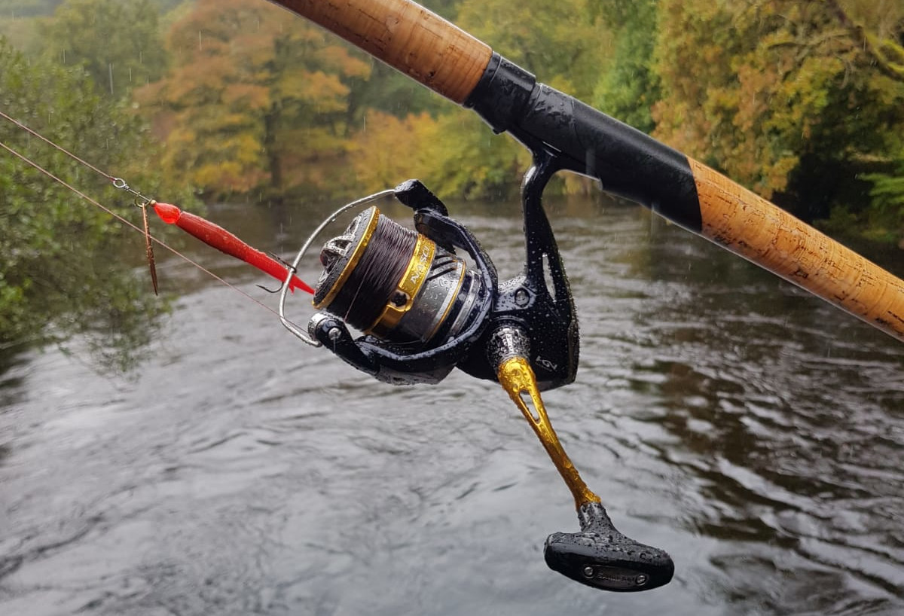
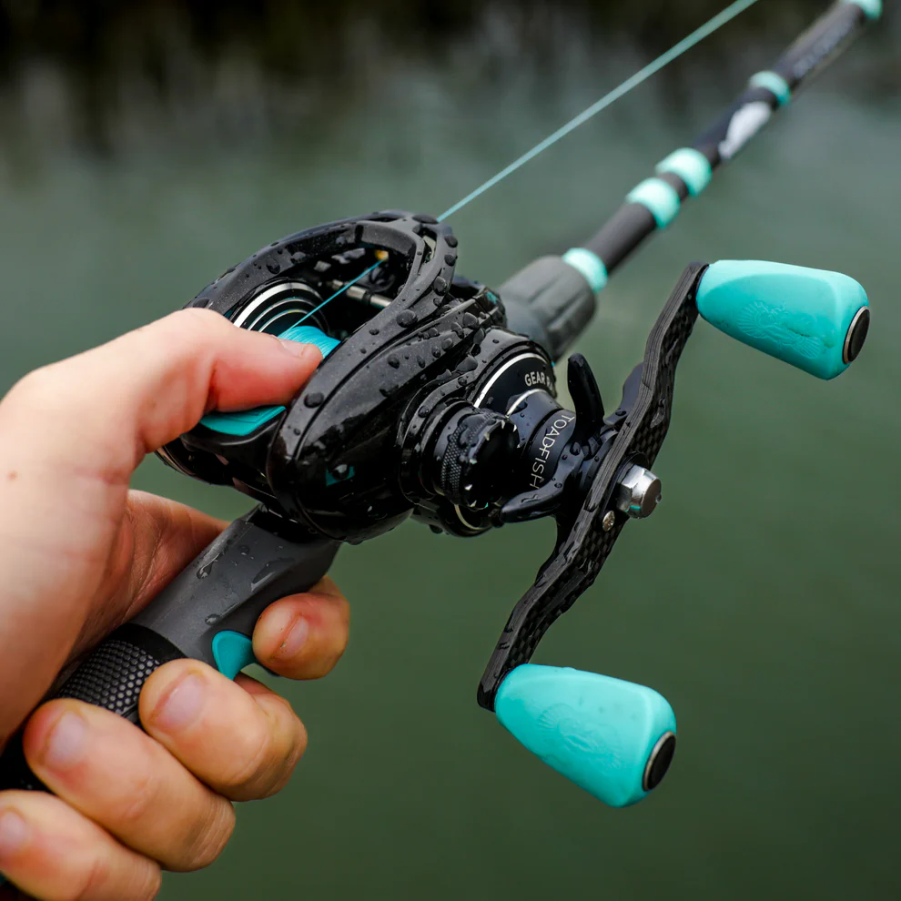

Équipement de Pêche
Lorsqu'il s'agit de choisir l'équipement de pêche, il est important de se rappeler que le prix n'est pas le facteur le plus important. Un équipement premier prix peut fonctionner aussi bien qu'un équipement de pro. Ce qui compte le plus, c'est de choisir l'équipement qui convient le mieux à vos besoins et à votre style de pêche.
Pour ma part, je possède un équipement spinning car j'ai commencé la pêche avec ce type d'équipement et je suis devenu accro à cette équipement.
Spinning
Le spinning est l'un des types d'équipement les plus populaires pour la pêche en eau douce. Il est facile à utiliser et polyvalent, ce qui en fait un excellent choix pour les débutants.
Avantages :
- Facile à utiliser, idéal pour les débutants.
- Polyvalent, adapté à de nombreux types de pêche.
- Moins cher que le casting.
Inconvénients :
- Moins précis pour les lancers longs.
- Moins adapté pour les leurres lourds.
Casting
Le casting est un autre type d'équipement populaire, surtout pour la pêche en eau salée et pour les pêcheurs plus expérimentés. Il offre une meilleure précision et contrôle, mais nécessite plus de pratique.
Avantages :
- Meilleure précision et contrôle des lancers.
- Adapté pour les leurres lourds et les lancers longs.
- Idéal pour la pêche en eau salée.
Inconvénients :
- Plus difficile à maîtriser, nécessite de la pratique.
- Généralement plus cher que le spinning.